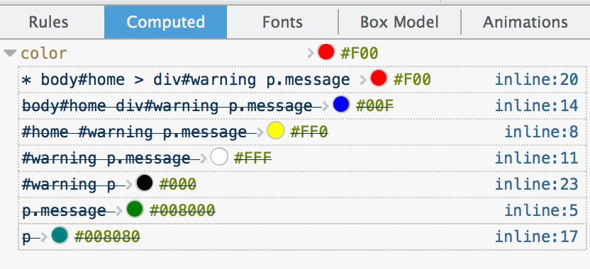

Specificity is a mechanism within the CSS cascade that aids conflict resolution. The concept of specificity states that when two or more declarations that apply to the same element, and set the same property, have the same importance and origin, the declaration with the most specific selector will take precedence.
!important?
Here’s a simplified description of the process by which the specificity of the selectors of two or more declarations is compared:
If one declaration is from a style attribute, rather than a rule with a selector (an inline style), it has the highest specificity. If none of the declarations are inline, proceed to step two.
Count the ID selectors. The declaration with the highest count has the highest specificity. If two or more have the same number of ID selectors, or they all have zero ID selectors, proceed to step three.
Count the class selectors (for example, .test), attribute selectors (for example, [type="submit"]), and pseudo-classes (for example, :hover). The declaration with the highest total has the highest specificity. If two or more have the same total, or they all have totals of zero, proceed to step four.
Count the element type selectors (for example div) and pseudo-elements (for example, :first-letter). The declaration with the highest total has the highest specificity.
Note: The universal selector, *, and the child combinator, > don’t have any specificity at all; they’re simply
ignored in all calculations. This is true for all combinators, which you can treat as though they had a specificity of zero,
as they will make no difference to your calculation.
Let’s try and break down each part of the calculation procedure so that it’s more understandable.
| A | B | C | D |
|---|---|---|---|
| Inline Style | IDs | Classes, Attributes, and Pseudo-classes | Element Types and Pseudo-elements |
First step: Calculate the value for Inline Style. If the style rule is specified within the element’s HTML style attribute, column A should equal 1; otherwise, it should equal 0. In fact, this is the only case where there is a value in column A.
Here’s an example of such a style rule:
<p style="color:red;">Red Text</p>
| Inline Style | IDs | Classes, Attributes, and Pseudo-classes | Element Types and Pseudo-elements |
|---|---|---|---|
| 1 | 0 | 0 | 0 |
As you can see, an inline style rule will always have a specificity of 1,0,0,0—the highest level of specificity.
For rules other than inline styles, we need to calculate columns B, C, and D. Let’s run through a full calculation for the following rule:
body#home div#warning p.message {
color: red;
}
Since this isn’t an inline style, we start off with a 0 in the first column:
| Inline Style | IDs | Classes, Attributes, and Pseudo-classes | Element Types and Pseudo-elements |
|---|---|---|---|
| 0 | ? | ? | ? |
Second step: Calculate the value for column B, we count the number of ID selectors in the selector. In our selector,
body#home div#warning p.message, there are #home and #warning, column B is equal to 2.
| Inline Style | IDs | Classes, Attributes, and Pseudo-classes | Element Types and Pseudo-elements |
|---|---|---|---|
| 0 | 2 | ? | ? |
Third step: Calculate the value for column C, counting the number of class selectors, attribute selectors, and pseudo-classes
in the selector. There’s one class selector, .message, so, column C is equal to 1.
| Inline Style | IDs | Classes, Attributes, and Pseudo-classes | Element Types and Pseudo-elements |
|---|---|---|---|
| 0 | 2 | 1 | ? |
Attribute Selectors for IDs: Note that [id="foo"] is not equivalent to #foo. There’s a significant difference in their
levels of specificity.
Fourth step: For column D, we count the number of element type selectors and pseudo-elements in the selector. In our example
selector, body#home div#warning p.message, there are three: body, div, and p. There are no
pseudo-elements to be counted, so we put a 3 in the last column.
| Inline Style | IDs | Classes, Attributes, and Pseudo-classes | Element Types and Pseudo-elements |
|---|---|---|---|
| 0 | 2 | 1 | 3 |
We now have our result. The specificity for the selector body#home div#warning p.message can be expressed as: 0,2,1,3.
!important?When an !important rule is used on a style declaration, this declaration overrides any other declaration made in the CSS,
wherever it is in the declaration list. Although, !important has nothing to do with specificity.
Using !important is bad practice and should be avoided because it makes debugging more difficult by breaking the natural
cascading in your stylesheets. When two conflicting declarations with the !important rule are applied to the same element, the
declaration with greater specificity will be applied.
!important!important, and either give the selector a higher specificity (adding an additional tag, id
or class to the selector), or add a CSS rule with the same selector at a later point than the existing one (in a tie, the last
one defined wins).table td {height: 50px !important;} /* 0002 */
.myTable td {height: 50px !important;} /* 0102 */
#myTable td {height: 50px !important;} /* 0110 */
Add the same selector after the existing one.
Rewrite the original rule to avoid the use of !important altogether.
If two or more selectors have the same specificity, then, according to the rules of the CSS cascade, the latter specified rule takes precedence.
Let’s consider a crazy situation where more than half a dozen color declarations for the same p element have the same
levels of importance and origins. Which color would the browser apply to the element?
p.message {
color: green;
}
#home #warning p.message {
color: yellow;
}
#warning p.message {
color: white;
}
body#home div#warning p.message {
color: blue;
}
p {
color: teal;
}
* body#home>div#warning p.message {
color: red;
}
#warning p {
color: black;
}
| Selector | Inline Style | IDs | Classes, Attributes, and Pseudo-classes | Element Types and Pseudo-elements |
|---|---|---|---|---|
body#home div#warning p.message |
0 | 2 | 1 | 3 |
* body#home>div#warning p.message |
0 | 2 | 1 | 3 |
#home #warning p.message |
0 | 2 | 1 | 1 |
#warning p.message |
0 | 1 | 1 | 1 |
#warning p |
0 | 1 | 0 | 1 |
p.message |
0 | 0 | 1 | 1 |
p |
0 | 0 | 0 | 1 |
The results have been ordered according to specificity—the highest are at the top, and the lowest are at the bottom. As you
can see, the top two selectors have exactly the same specificity, despite the extra universal selector and combinator in one
of them. In this case, they tie for specificity and the one that appears last in the style sheet will be the winner. If you
look at the original style sheet source above, the red color will be applied to the p element.
You can see from table that the selector p.message has a lower specificity than the selector #warning p. This is
a common cause of head scratching among those new to CSS, who often think that a class selector will be specific enough to
match an element in all cases.
Finally, let take a look at how the browser read this and the final style is applied with an image from firebug.

Darío Dessaunet dario.dessaunet@globant.com